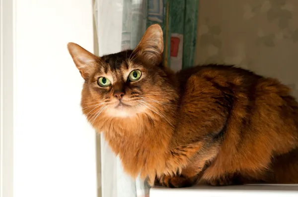

Un gato somalí suele resultar muy interesante y algo enigmático, gracias a la apariencia algo salvaje que le brindan su pelaje y sus rasgos. Sin embargo, son excelentes felinos domésticos, con gran capacidad de adaptación a la vida familiar y hogareña.
Poseen un carácter activo, aprenden fácilmente y muestran mucha predisposición para el entrenamiento.
El somalí no solo proviene del gato abisinio, sino que también se asemeja muchísimo a un ejemplar de esta antigua raza felina. De hecho, la única diferencia realmente notable entre los dos felinos es la longitud de su pelaje: mientras que el somalí posee un pelaje semilargo, que necesita cepillados diarios, el abisinio tiene un manto corto y fácil de mantener.

FIN